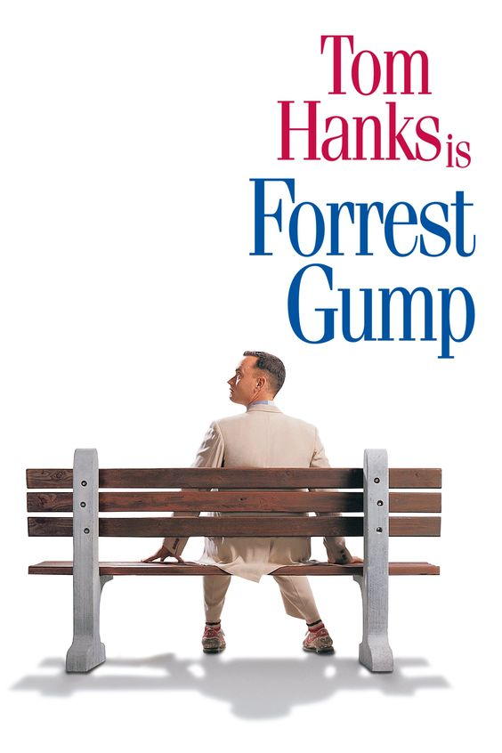

Forrest Gump

Summary
This movie is one of my favorite movies because I saw it when I was
quite young and it made an impression on me.
I always thought that the movie does an incredible job of incorporating so
many historical events in the 1900s and showing them
through the eyes of the main character, Forrest Gump, played by the legendary
Tom Hanks. Hanks is an incredible actor and in combonation
with the directing by Robert Zemeckis, it creates a very impressive and compelling
narrative that can be enjoyed by everyone.
In the movie,
Forrest Gump is a mentally slow person that is bullied in his childhood. Despite this,
he goes on to live an amazing life and somehow ends up involved in nearly every major historical
event in the late 1900s. I chose this background because it is the same road that Forrest runs
along during the movie.